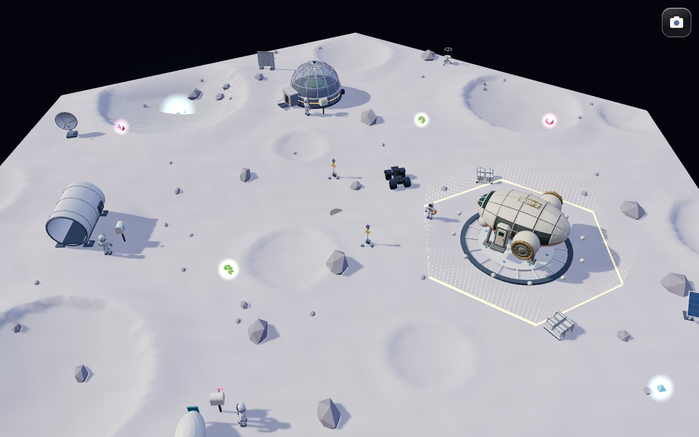
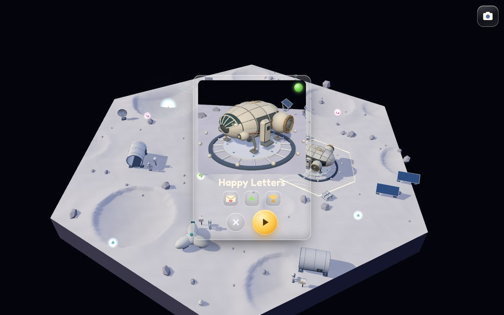
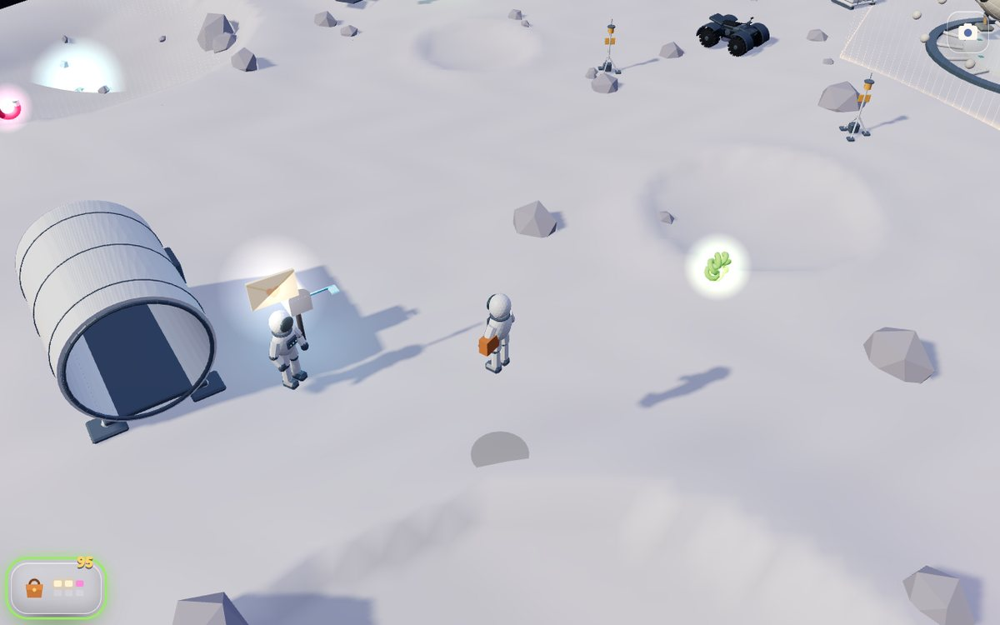
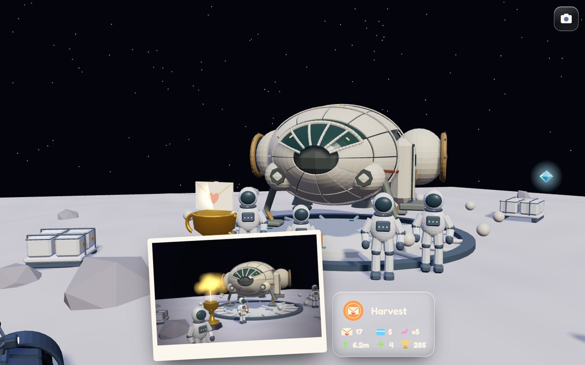

A free-spirited romp on the Moon. People write letters home; you bound around in low gravity picking them up, grab power-ups, hop them into the ferry for points, and at the end the colonists give your ship a trophy and you get the photo.

Full screenBuilt from the real Moon tile kit (the ferry, pad, dome, habitats, astronauts, buggy, meteorite). Tap the glowing cell by the ferry to get the card. A sketch to feel the idea, not the build.



Every game in the Oracle has a DNA of eight axes. Abbie's World's home DNA is the mean of Evan's taste list (Tiny Glade, Dorfromantik, 9 Kings, Bricktales). Space Mail keeps home's low challenge, short sessions and no failure, and turns tempo up: it is a romp, not a builder. The closest studied games are Astro Bot, PAW Patrol World, Crazy Taxi and A Short Hike.
We keep the house rules from GAME_IDENTITY.md: few verbs (four), the world answers every action in under half a second, the interface hides, and nothing is lost. The record is docs/oracle/spacemail/space-mail.identity.json (valid against the schema).
Pick up, drop off, cheer, repeat. Each fare or letter is a tiny story with an ending, so the loop never drags.
Hold hop to rise higher, puff on landing, a little hover to fix a bad jump. Small hands need the hover.
More air, more reach, more speed, or a ride. Never a weapon here. A vehicle is the one kids love most.
Carry more and score more, but the ferry is over there. Greed and the trip home make choices without rules.
The ones you helped gather, cheer and give you something. A crowd beats a number.
A pose, a fanfare, and a picture in an album. A medal ladder says how well it went without words.
Green chips are games in Evan's library. We take ideas (style), never any game's art, characters, music, text or levels (expression). Evidence: docs/oracle/spacemail/spacemail-signatures.json.
| Part | What it is | How you know (no words) |
|---|---|---|
| Happy letters | Colonists write home every few seconds. Some letters float away upward: catch them with a big hop. | The mailbox flag goes up, the sender hops and faces you, the envelope glows over their head (in the world). |
| Parcels from Earth | Every bag you post, the ferry hands back a parcel for one home. | The parcel wears that home's colour, the same as its flag, door light and the colonist's suit trim. |
| Power-ups | Moon boots (double hop), letter magnet (reach 7 m), comet (fast), the buggy (ride for 12 s). | A shape and a colour each; while active, a ring of that colour glows round the satchel and drains. |
| Points | 10 a letter, bigger bags pay more (x1.25 each extra), 1.5x if you post it mid-hop; 15 a parcel. | A "+" stamp pops over the ferry or the home, with a rising chime in D major (Music Bible). |
| The clock | Two minutes. No fail: letters left over just go next time. | Twelve lamps round the ferry pad light one by one, then the horn. Everyone in the world can see it. |
| Where next? | Y, or tap the satchel. | A short gold arrow on the ground under Abbie points at the next useful thing, for the player only. |
The play HUD is one glass satchel (about 3% of a phone screen, zero words): six slots, the score, and the power-up ring. Everything else is in the world. The mission light and the "where next" arrow are presentation layer: drawn for the player, invisible to colonists, the simulation and Suzy.
The sketch reads any standard gamepad in the browser (the Gamepad API) and shows a small controller mark when one is connected. On the board the left stick picks a lit cell and A opens its card. Touch puts a glass stick wherever your thumb lands and two round glass buttons on the right; nothing is drawn until you touch.
The camera is a high follow camera that keeps its heading, so "up on the stick" always means "up the screen" for small players. The right stick nudges it. The over-the-shoulder study (AW-STUDY-0011) owns the closer view.
The sketch keeps records in this browser. The build stores them on the player's sign-in (the same account and Blob ledger as the AI wallet): a small record per player (plays, best, badges, stats) and the album photos as JPEGs. Nothing else is collected, as Evan asked for accounts.
People and decorations give missions. In the world, the giver shows it (a flag up, a wave, a blinking dish). On the board, the cell gets a thin LED light rising straight up round its edge, in the mission's colour. Tap the cell (or select it with the stick and press A) and its card flips up.
Mission cards are the same Card Forge cards as the hand, with their own tier gem. Sandbox v2 owns card tiers, so the mission light, the card and this HUD are shared with that thread to fit its tiers.
Other scenarios on the same engine: Moon Rock Hunt (find five glowing rocks around the crater), and Evan's idea of a night-shift version as an overhead twin-stick game. That one is noted as an idea, not designed here.
A mission = giver, cell, card, rules, reward recipe. Space Mail is the first. Runs inside the Moon tile, not a separate page.
Abbie as the skinned player from AW-STUDY-0011 option C (run, hop, land, wave), with the satchel on her back.
Shot recipe + path-traced render + album store on the player's account.
One shared presentation-layer effect for every place; Ranch in wood and bells, Moon in light.